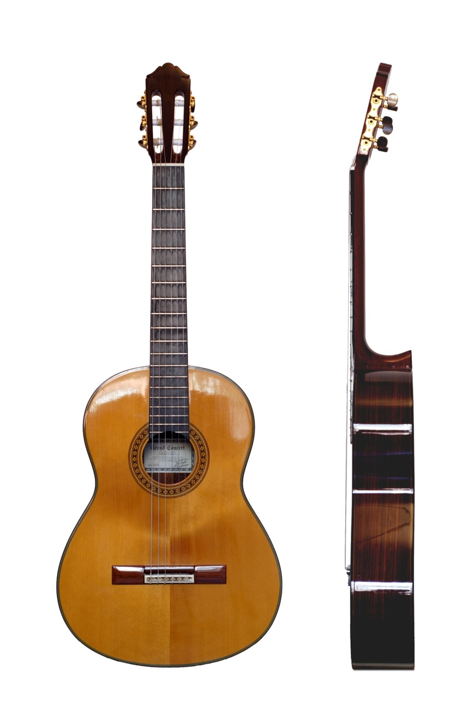
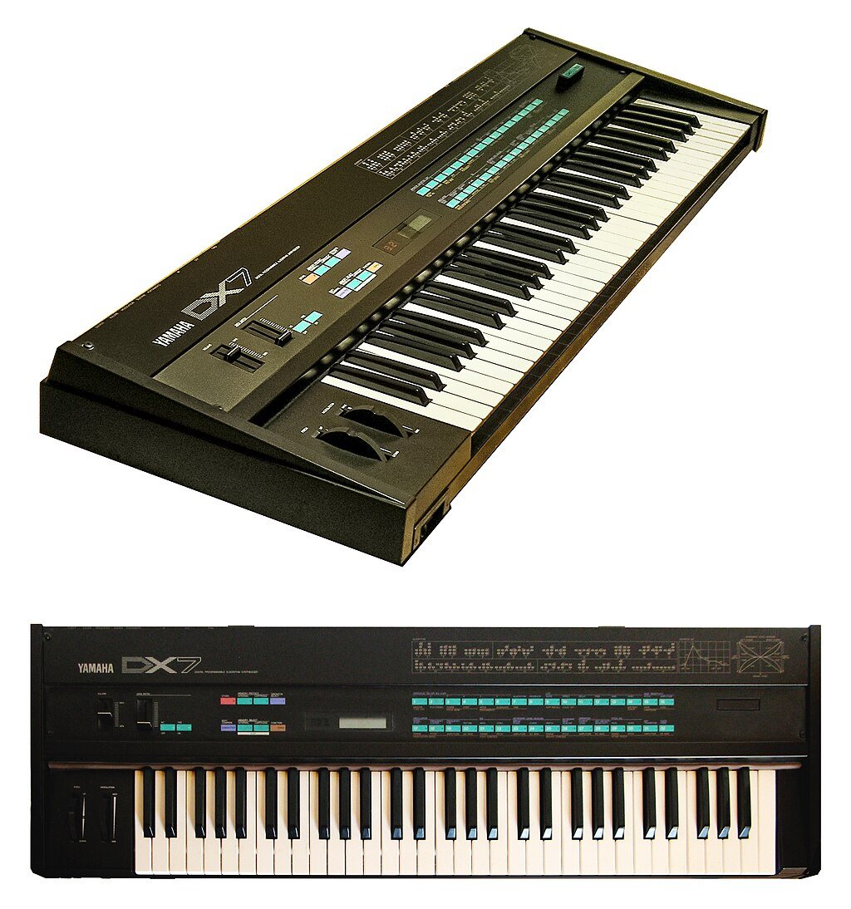
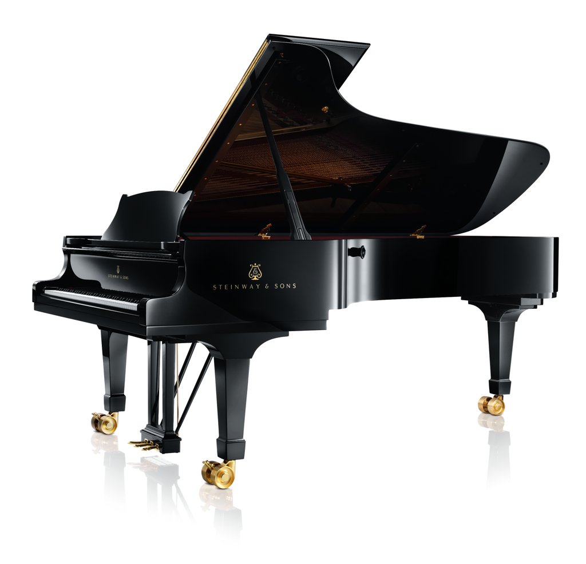
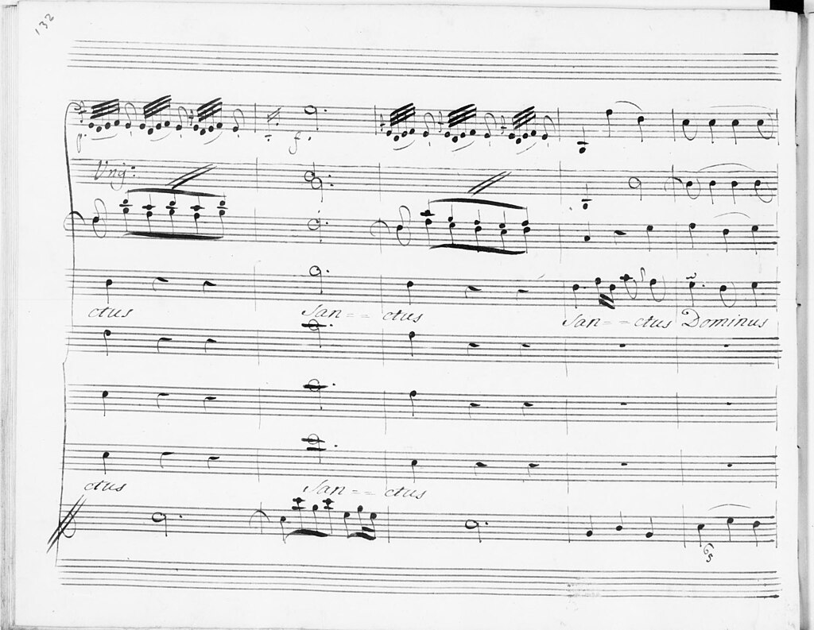
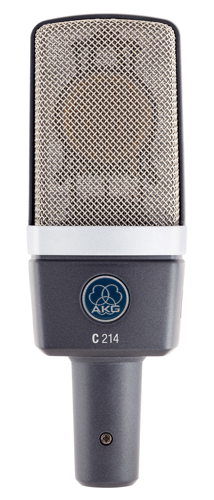
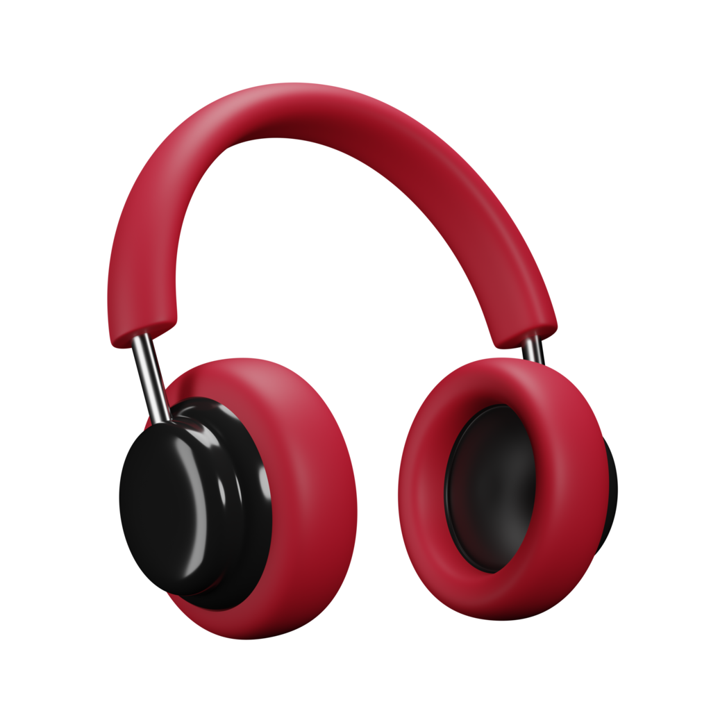
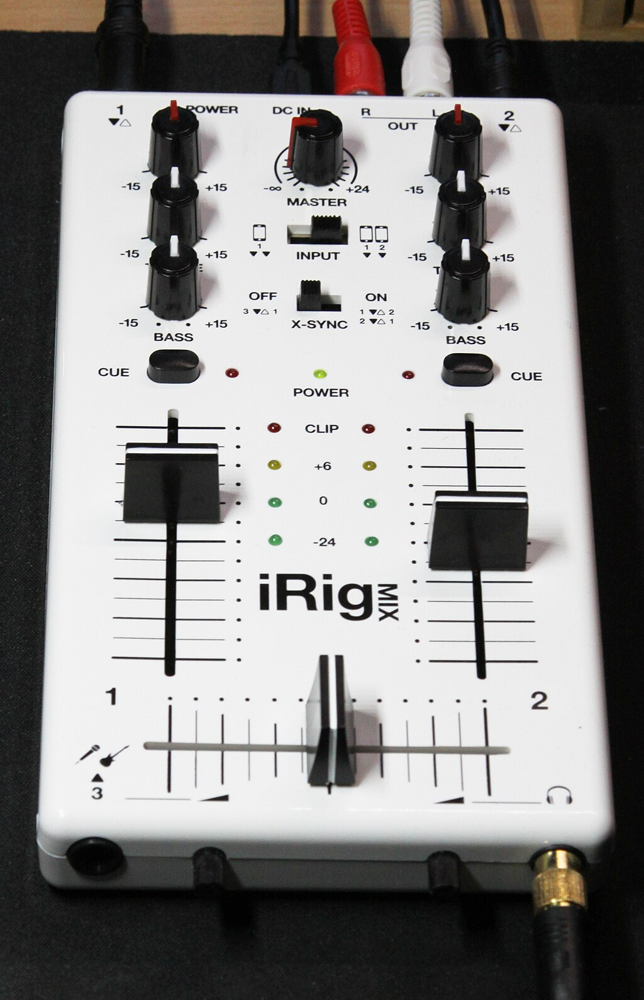

Instruments de musique
-
Guitare
Découvrez notre large sélection de guitares, des modèles classiques aux guitares électriques, adaptées à tous les styles et à tous les niveaux.
-
Synthétiseur
Explorez notre large gamme de synthétiseurs, des modèles analogiques aux instruments numériques, parfaits pour tous les styles de musique.
-
Violon

Large sélection de violons, des modèles pour débutants aux instruments professionnels.
-
Piano
Large choix de pianos, des modèles acoustiques aux pianos numériques, pour tous les niveaux.
Partitions
Des œuvres classiques et modernes pour tous les niveaux.
-
Classique
Large sélection de partitions classiques, des œuvres incontournables aux pièces rares.
-
Rock'n'Roll
Large choix de partitions de rock, des classiques intemporels aux morceaux récents.
Appareils de mesure
Accessoires essentiels pour musiciens et techniciens du son.
Matériel audio
-
Microphone
Microphone de studio à condensateur, idéal pour la captation des voix et instruments acoustiques.
-
Ampli

Large sélection d’amplis hi-fi, des modèles compacts aux systèmes les plus puissants.
-
Casque audio
Casque circum-aural offrant une écoute précise et confortable pour le mixage audio.
-
Table de mixage
Large choix de tables de mixage, des modèles pour débutants aux consoles professionnelles.